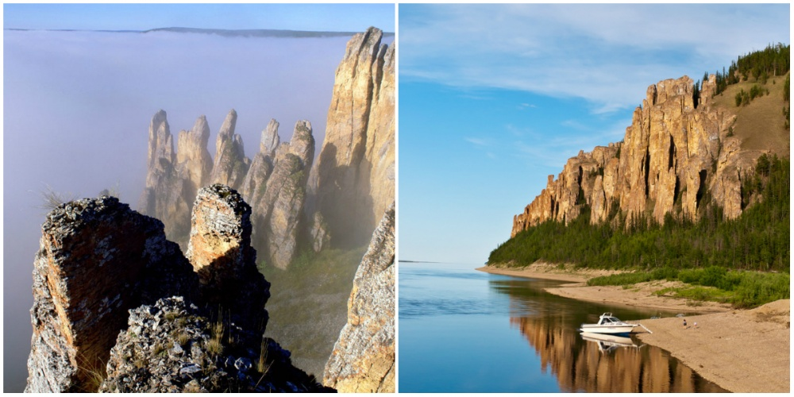
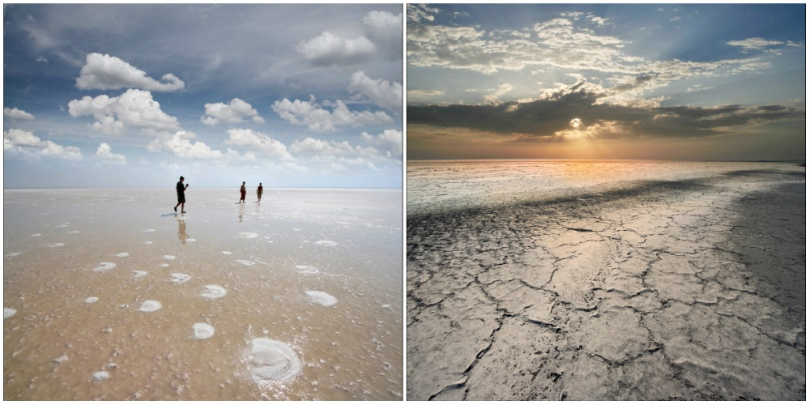
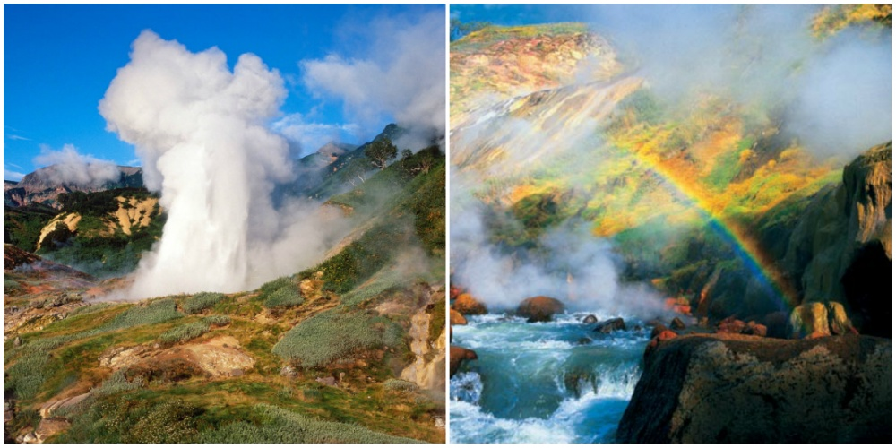

| Ленские столбы, Якутия |
Озеро Эльтон, Волгоградская область |
Долина Гейзеров, Камчатка |
|  |
 |
 |
Ленские столбы
Ленские столбы — это скалы, расположенные по
правому берегу реки Лены, в двухстах километрах от Якутска.
Каждый столб представляет из себя скульптурное сооружение,
напоминающее средневековые колонны. Возраст этих скал составляет
500000 лет.
Озеро Эльтон
Озеро Эльтон — крупнейшее соленое озеро в России.
Минерализация воды летом может достигать 400 г/л, что в 1,5 раза
выше, чем в Мертвом море. В таком растворе живут только бактерии
и одноклеточные водоросли.
Долина Гейзеров
Долина гейзеров - единственное гейзерное поле в России и
Евразии, одно из самых крупных подобных мест в мире. На его
поверхности расположено около 20 крупных гейзеров и много
горячих источников, выбрасывающих воду или пар.